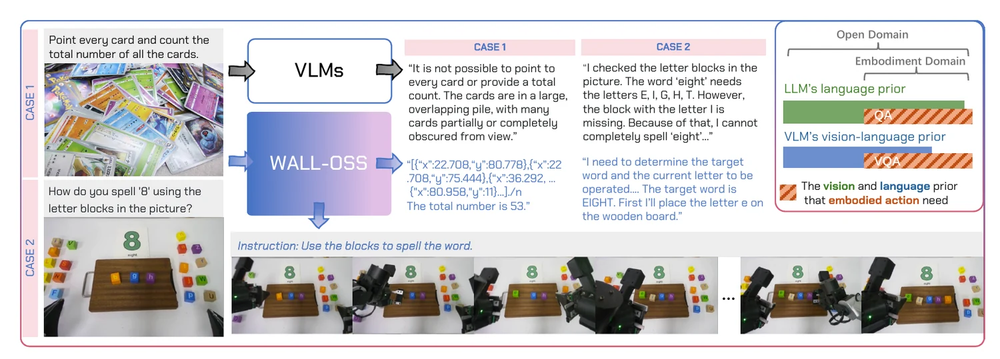
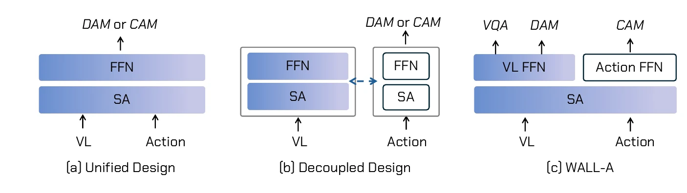
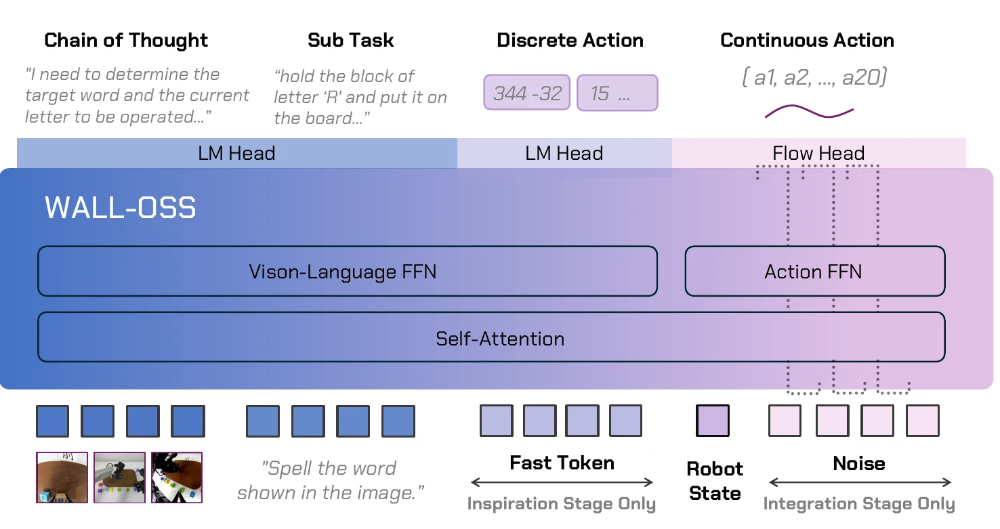
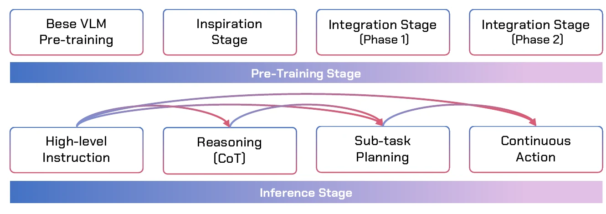
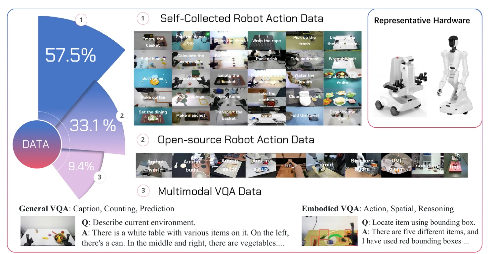
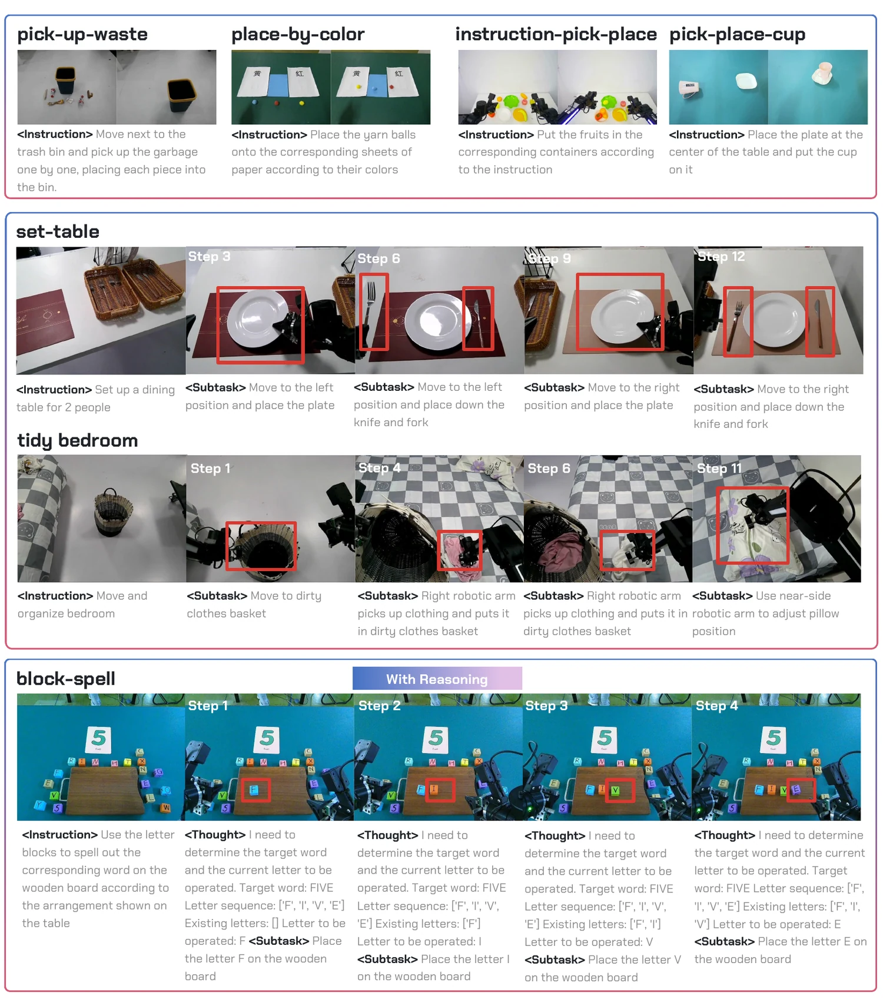
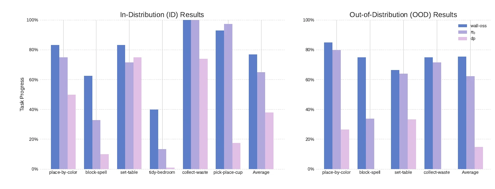

arXiv 2509.11766 · cs.RO · v1 2025 年 9 月 15 日（文内日期 9 月 8 日）· 技术报告 · 中文精读
Igniting VLMs toward the Embodied Space
作者 Andy Zhai、Brae Liu、Bruno Fang、Chalse Cai、Ellie Ma、Ethan Yin、Hao Wang（通讯）、Hugo Zhou、James Wang、Lights Shi、Lucy Liang（项目负责人）、Make Wang、Qian Wang、Roy Gan、Ryan Yu、Shalfun Li、Starrick Liu、Sylas Chen、Vincent Chen、Zach Xu，共 20 人，来自 X Square Robot（自变量机器人）。
关于这份精读。这篇论文在 arXiv 上以 CC BY 4.0 发布，只有 v1（2025-09-15 提交）。我检查了 PDF 每一页的页脚，只有 arXiv 侧边编号和页码，没有和 CC BY 矛盾的版权声明。本页按原文顺序覆盖摘要、正文六节和参考文献里值得注意的几处，小节编号和原文一致，用自己的话整理，不是逐字翻译。原文没有附录。
图 1 到图 7 从 arXiv PDF 裁切（250 dpi 渲染，只做了裁切、缩放和格式转换，没有改内容）；版权归作者，裁切件按 CC BY 4.0 使用，署名 Zhai 等（X Square Robot）。图下的文字是我写的。表 1 到表 3 照录原文。原文图 7 只有柱状图没有数字，本页的“图 7 矢量读数”是我从 PDF 的矢量路径读出的（pdftocairo -svg 导出，按 0% 和 100% 两条刻度标定），误差约 ±0.1 个百分点。原文公式没有编号，本页按出现顺序编为 (1)–(4)。“读者注”是整理时核算或对照发现的，不属于论文内容，页尾有汇总。
代码和权重。官方代码 X-Square-Robot/wall-x，Apache-2.0，只读没有运行。当前 HEAD 是 ce2a1ae（2026-09-11），已经是 Wall-X 1.1.0，主要服务后来的 Wall-OSS-0.5。和论文对照用的是 arXiv v1 之前的最后一个提交 86f70a3（2025-09-11，首个提交 24dbdbd 是 2025-09-07）；仓库自己的 workspace/README.md 说用 WALL-OSS-FLOW / FAST 权重时要切回 97406f2（2026-02-11）。下文行号不加说明时都指 86f70a3。HF 上两份权重我没有下载，只用 HTTP 范围请求读了 model.safetensors 的文件头（张量名和形状）和几个小张量，按文件头逐项算了参数量。
现有视觉语言模型（VLM）对空间和“身体”的理解有限。把 VLM 搬到机器人上，会遇到模态、预训练分布和训练目标三方面的不匹配，动作的理解和生成成了瓶颈。WALL-OSS 是一个端到端的具身基础模型：以 Qwen2.5-VL-3B 为主干，用“紧耦合”的混合专家结构（同一套自注意力，视觉语言 token 和动作 token 各走一个前馈网络）加多阶段训练，让一个模型既能回答具身问题、拆解子任务，又能输出连续动作。论文把“指令 → 推理 → 子任务 → 连续动作”统称为统一的跨层级思维链（Uni-CoT）。
它是不是世界模型？不是。WALL-OSS 是视觉-语言-动作模型（VLA）：输入当前画面、指令和机器人状态，输出文本（推理、子任务）、离散动作 token 或一段连续动作，不预测未来的画面或观测。论文第 6.2 节把“预测未来帧”列为一个尚待回答的方向，本身没有用（读者注 1）。
读完我认为最值得记住的四点：

| WALL-OSS（本页） | MolmoAct2 | GR00T N1 | GR00T 2 / OpenWAM | |
|---|---|---|---|---|
| 类型 | VLA | VLA（动作推理模型） | VLA | 世界-动作模型（WAM） |
| 预测未来画面 | 否 | 否（Think 版先预测离散深度图） | 否 | 是，画面和动作一起生成 |
| 动作分支和 VLM 的关系 | 同一套注意力，只分 FFN | 独立的 36 层 DiT，每层读 VLM 的 K、V | 独立 DiT，交叉注意力读 VLM 输出 | 视频骨干和动作网络联合注意力 |
| 先离散后连续 | 是：FAST → 流匹配 | 是：离散 token 预训练 → 挂动作专家 | 否 | – |
和 MolmoAct2。两篇的训练顺序几乎一样：先让 VLM 用 FAST 一类的离散 token “说动作”，再接流匹配动作分支出连续动作。区别在耦合方式：MolmoAct2 的动作专家是另一个 DiT，逐层读 VLM 的 K、V；WALL-OSS 连注意力都共享，只把 FFN 分成两份，参数更省（动作 FFN 约 4.5 亿）。WALL-OSS 比 MolmoAct2 早约 8 个月。
和 GR00T N1。WALL-OSS 在 §2 和 §3 都把 GR00T N1 当作“规划器 + 控制器”分层设计的例子，批评它接口不可微、误差累积。按 GR00T N1 精读页，它的 System 1 是独立的流匹配 DiT，通过交叉注意力读 System 2（Eagle-2 VLM）的输出，两半端到端一起训，所以“不可微接口”对 GR00T N1 并不准确：它的问题更接近图 2(b) 的“解耦设计”。这是我的读法。
和 GR00T 2、OpenWAM。这两页是世界-动作模型，同时生成未来画面和动作。WALL-OSS 没有这条路线；它在 §6.2 把“预测未来帧”和“3D 中间模态”当作可能降低 VL→A 学习难度的中间形式提出，但没有实验。
和 LIBERO。原论文没有做 LIBERO 或任何仿真基准，全部是自家真机任务。当前仓库 HEAD 里的 LIBERO 评测（scripts/run_libero.sh、workspace/example/libero.yml）是为 Wall-OSS-0.5 加的；97406f2 里也有从 VLM 训练 LIBERO 的配置 workspace/lerobot_example/libero/config_qact_libero_from_vlm.yml。原版 WALL-OSS 没有公开的 LIBERO 成绩，我没找到。
同公司的另外两页。Wall-OSS-0.5（arXiv 2605.30877）是本文模型的后续版本，代码就是当前 wall-x 1.1.0；它和原版的差别请看那一页。WALL-SS 是 X Square Robot 的世界模型，不是 VLA，和本文属于不同路线。两页的具体结论以各自页面为准，这里不转述。
语言和视觉的基础模型进展很快，Gemini 2.5、GPT-5 这样的全模态模型能同时处理文本和视觉并保持推理能力。但它们是“离身”的：不从和物理世界的交互中改进自己，也不生成可执行的动作。所以在具身领域，动作的理解和生成仍是通往通用智能的核心瓶颈。
泛化做得好的模态，靠的都是大规模、多样、易得的数据。互联网上文本、图像、视频很多，文本和 2D 视觉较早获得了单模态能力和跨模态关联。具身场景里对齐好的视觉-语言-动作（VLA）数据稀缺且异构，从零训练难以在动作上泛化。于是出现了把强 VLM 主干迁到动作空间的做法，例如 OpenVLA 和 π0。
朴素做法（给预训练 VLM 接一个动作头，用机器人轨迹监督）常导致权重漂移，侵蚀原有的视觉语言先验。“知识隔离”尽量少动 VLM 参数，但结构松耦合，语义和控制绑定不紧；而且 VLM 本身在具身空间就弱，碰到先验之外的动作表现差。作者把困难归为三个鸿沟：
本文的回应：（1）紧耦合的混合专家（MoE）结构和训练策略，不同阶段激活不同专家和权重，用不同的动作建模方式（离散或连续），弥合训练目标鸿沟；（2）把多模态任务和面向具身、空间定位、进度建模的 VQA 数据结合，并把离散化的动作先验植入 VLM 的输出空间做粗动作监督，弥合预训练分布鸿沟；（3）在此基础上建模统一的 CoT 前向映射，让模型从高层语义一路分解到细粒度动作，弥合模态鸿沟。作者还开源了训练代码和检查点。
语言、视觉和操作的基础模型。网络规模预训练推动了 LLM 和 VLM 的多模态推理（Gemini 2.5、Claude 3.7、DeepSeek-R1、Llama 3/4、Qwen 2.5、GPT-4o、Qwen2.5-VL、InternVL 系列）。VLA 基线要么把动作编码成 token，要么学连续头：连续的有扩散和流匹配（DP、Octo、π0、π0.5），离散的有压缩 token 化（ACT、OpenVLA、FAST、RT-2）。本文的路线是“先离散先验，再连续控制”：先把离散动作先验植入 VLM 输出空间（Inspiration），再优化流匹配头出高频动作（Integration），同时用静态路由的紧耦合 MoE 强化语言-动作绑定。
多模态与机器人数据联合训练。从 VLM 初始化、把网络图文、对话、长视频和多具身机器人数据一起训，既保留开放世界的视觉语言能力，又注入具身空间语义；跨具身、跨环境聚合进一步帮助迁移。本文强调统一格式的具身认知监督（把指令、推理、子任务和连续动作连起来）、两个阶段里对开源动作数据的统一和配额混合，以及静态路由 MoE。
语言推理和子任务分解。和 SayCan、Code-as-Policies，以及 Hi Robot、GR00T N1 这类“VLM 规划器 + 独立控制器”的分层设计不同，本文用单模型的 Uni-CoT 端到端学“指令 → CoT → 子任务 → 连续动作”。它可以包含或跳过中间步骤，也可以把推理和执行交错进行。和 RT-H 的动作层级、CoT 用于控制的方法（ECoT、CoT-VLA）、PIVOT 提示、LLaRVA 指令微调、HAMSTER 分层策略互补。
目标是一个基于 Transformer 的具身基础模型：既增强 VLM 对具身场景的空间理解，又能高质量地生成动作。
模型结构。图 2(a) 是“统一设计”：直接扩展原 VLM，用离散动作建模（DAM）或连续动作建模（CAM）按下一个 token 预测，例如 RT-2、OpenVLA。动作监督会显著扰动原 VLM 的权重分布，动作的指令跟随和泛化大幅退化，过拟合到动作上。图 2(b) 是“解耦设计”：另起一个分支做动作预测，和 VLM 交互取信息，例如 π0。问题是视觉和语言只是动作生成的辅助信号，松耦合削弱了动作的指令跟随。本文用 MoE 设计，把不同的 FFN 分给对应的训练任务，形成紧耦合的跨模态结构。

图 3 是整体结构。主干是 Qwen2.5-VL-3B。输入是视觉（第一人称和腕部相机）和文本指令，按训练阶段输出不同内容，但始终以同样的多模态输入为条件。记 \(c=(\text{vision},\text{instruction})\)，\(h=F_\theta(c)\) 是 VLM 对它的编码，\(F_\theta\) 是参数为 \(\theta\) 的 VLM 主干。

沿着 VLM 预训练之后，作者的预训练分两个部分：VLM 的“启发”（Inspiration）和三种模态（视觉-语言-动作）的“融合”（Integration），见图 4。

启发阶段（Inspiration）。复用预训练 VLM 原有的 FFN，加入具身 VQA 来增强机器人环境里的空间推理。训练目标包括掩码语言建模、图像 / 视频-文本对比学习、指令跟随，以及时间顺序 / 因果建模，用来建立有落地的视觉语言先验。同时引入离散动作目标：把连续动作轨迹用 FAST 编码成离散 token（参照 π0-FAST），和文本 token 对齐。
\(a\) 是连续动作轨迹，\(z_{1:K}\) 是 FAST 得到的离散动作 token，\(\tau_t\) 是第 \(t\) 个文本 token，\(\lambda_{\text{VQA}}\)、\(\lambda_D\) 是 VQA 和离散动作目标的权重。这一阶段让 VLM 有了粗略、有语义落地的动作意识，输出包括思维链、子任务预测和 FAST 离散动作 token。具身 VQA 增强空间理解，FAST token 预测给出粗的动作理解。
代码里文本 token 和 FAST token 共用一个交叉熵：modeling_qwen2_5_vl_act.py:1424-1460 对所有标签不为 −100 的位置取 loss_fct(shift_logits, shift_labels)，再对这些位置求平均，没有区分文本和动作 token，也就是 \(\lambda_{\text{VQA}}=\lambda_D\)，按 token 数自然加权。FAST token 是 2048 个新增词表项 <|action_token_0|> 到 <|action_token_2047|>（HF tokenizer_config.json：action_token_start_index=151667，action_token_vocab_size=2048），分词器本身直接用 Physical Intelligence 公开的 physical-intelligence/fast（workspace/README.md 叫用户去克隆它），没有看到为本文重训的痕迹。正文列的“掩码语言建模、图文对比学习”在公开代码里也没有对应的损失；预训练代码没有公开，这几项无法核对。
融合阶段（Integration）。在这些先验之上，把离散动作预测换成流匹配的连续动作建模，并分两段：（1）冻结 VLM，只训动作 FFN 下的流头；（2）解冻 VLM 联合优化。这一阶段视觉、语言和动作表示通过注意力交互，同时静态路由把以动作为中心的特征送进动作 FFN、把视觉语言特征送进视觉语言 FFN，不是学出来的 softmax / top-k 路由。第一段构造加噪样本、回归速度场：
\(x_0\) 是干净的动作样本，\(x_t\) 是时刻 \(t\) 的加噪样本，\(\epsilon\) 是高斯噪声，\(\rho(t)\) 是噪声调度，\(v_\phi\) 是参数为 \(\phi\) 的速度场网络，\(w(t)\) 是加权函数，\(\lambda_C\) 是连续动作损失的权重。作者说 Inspiration 阶段的监督能稳住这里的跨模态注意力，保住 VL 先验，并给连续动作一个可靠的初始化。
第二段用同一个流匹配目标联合优化两部分，梯度同时流向 VLM 和动作分支：
作者认为这一步迫使模型在紧耦合结构里整合多模态信息，实现跨模态对齐。
代码 action_head.py:337-338：noisy_action = (1 - t) * noise + t * action_chunk，目标 flow = action_chunk - noise。也就是代码里 t = 1 是干净动作、t = 0 是纯噪声，目标速度指向数据；论文式 (2) 里 ρ = 0 是干净、ρ = 1 是噪声，目标 \(\epsilon-x_0\) 指向噪声。令 \(t=1-\rho\)，两者是同一条直线路径，速度差一个负号，推理时积分方向相反，不矛盾。论文没写的三样在代码里是：\(\rho\) 线性（直线插值）；\(w(t)\equiv1\)（flow_loss 只乘自由度掩码，:401-425）；时间 t 从 Beta 分布采样，\(u\sim\mathrm{Beta}(1.5,1)\)、\(t=(s-u)/s\)、\(s=0.999\)（:221-234, 253-271），和 π0 的做法一样，偏向噪声端。\(\lambda_C\) 是 flow_loss_weight，默认 1.0（modeling_qwen2_5_vl_act.py:805）。速度场网络 \(v_\phi\) 不是单独的网络：加噪动作经 w1（40→2048，动作 20 维加自由度掩码 20 维）、和正弦时间嵌入拼接后过 w2（4096→2048）、SiLU、w3，作为 token 嵌入进主干，最后由 action_proj_back（2048→20）读出（action_head.py:239-250）。
统一的跨层级思维链（Uni-CoT）。作者把思维链从狭义的“LLM 一步步写推理”推广到覆盖语义到感知运动的整条谱系：指令 → 推理（CoT）→ 子任务计划 → 连续动作。统一的表述允许在任意抽象层级之间前向映射，模型能在一个可微框架里在高层思考和低层执行之间切换。
现有做法常把这些层级拆成流水线或多模块，例如 Hi Robot 和 GR00T N1：指令先给规划器出计划，再交给控制器执行。短期内能降低训练和执行难度，但接口不可微、系统性能受每个模块能力限制、误差跨阶段累积。WALL-OSS 用一个端到端模型联合学跨层级映射，可以按任务复杂度用完整的中间推理，也可以直接从指令映射到动作。
记 \(v\) 为视觉输入，\(x\) 为语言指令，\(c\) 为可选的思维链，\(a_{1:T}\in\mathbb R^{T\times d}\) 为长度 \(T\)、维度 \(d\) 的目标动作轨迹。Uni-CoT 用一个“路径丢弃”（path-drop）目标训练统一预测器 \(F_\theta\)，让模型可以以中间推理为条件，也可以跳过它：
\(H_\theta\) 是监督为 \(y\) 的具身 VQA 头，\(\ell_{\text{act}}\) 是动作预测损失，\(\ell_{\text{VQA}}\) 是视觉问答损失，\(\lambda\) 是平衡系数。这个式子同时允许全链训练和直接 \(x\to a\) 训练。注意式 (4) 里并没有写出“丢弃”本身（例如以某个概率把 \(c\) 置空），只能从文字理解。
作者说 Uni-CoT（i）通过具身 VQA 增强空间理解，从而改善落地和动作预测；（ii）明显提高长程任务成功率和指令跟随。推理时（图 4 下排）可以自己决定要不要调用 CoT / 子任务分解，甚至边推理边执行：已经想好的子任务先出动作，同时继续推理，用于实时的人机交互。
代码里没有 CoT 字段。构造训练样本的是 wall_x/data/utils.py:414-503 的 get_wallx_normal_text：如果这一帧有 subtask_generation 或 distribute 标注，就以概率 generate_subtask_ratio 做成“Predict the next action in language”样本（输出子任务文本，相当于 VQA）；否则做成“Predict the next action in robot action”样本，指令取子任务标注（有的话）或原指令，后面接 32 个 <|action|>。“路径丢弃”在代码里体现为样本级的二选一，不是一条序列里先写 CoT 再出动作。两处细节：generate_subtask_ratio 默认 0（data/config.py:92）；LeRobot 加载器只把数据集的 task 字段放进 instruction_info（load_lerobot_dataset.py:108），所以按 README 直接微调只训动作，不训子任务和 CoT。另外 get_task_instruction（utils.py:366-411）的采样概率实际不起作用：循环里第一个存在的键就 break，if got_instruction 那个分支永远走不到（我的读法）。图 6 里 block-spell 的 <Thought>…<Subtask>… 格式，在公开代码里找不到对应的模板。
自己画的 · 11 幕 3D 框架动画
总览（它输出什么、不输出什么）、三种耦合范式、一层里的共享注意力和两个 FFN、token 序列和注意力掩码、启发阶段的 FAST 离散化、融合阶段第 1 段和第 2 段、流匹配采样、Uni-CoT 的路径、数据配方、结果（图 7 矢量读数）。层宽、词表、参数量来自 HF 权重的文件头和论文时期的代码；玩具数字都标了“玩具”。
为了弥补大规模对齐 VLA 监督的缺乏和 VLM 的空间理解缺陷，作者构建了以具身为中心的多源数据集，超过 10,000 小时，由三部分组成：（1）自采机器人动作数据，质量高、任务复杂；（2）开源动作数据，用于跨形态、跨环境泛化；（3）多模态 VQA 数据，保持并加强视觉语言能力，补充时空和推理监督（图 5）。
数据按两阶段配方分工：Inspiration 侧重具身 VQA、指令跟随和 FAST 离散动作先验；Integration 侧重真实和统一后的开源轨迹上的高频连续控制（流匹配），先训动作分支，再和 VLM 联合优化，以加紧视觉-语言-动作的对齐、减轻遗忘。

平台和场景。面向真实的日常操作：桌面机械臂、移动支架、轮式双臂和轮式人形，配第一人称 / 第三人称和腕部相机。场景包括厨房清洁、穿衣 / 整理、移动抓放和装配。
任务谱。两大类：（1）明确指令下的短程操作，强调精度和泛化；（2）目标清楚但过程隐含的长程推理任务，需要任务分解、进度跟踪和实时决策。
标注和质量控制。用多模型管线做细粒度的步骤标注，人工抽检，直接在轨迹上给出 CoT 式的阶段监督。做了多传感器时间戳同步、离群过滤、低质量 / 空闲帧去除、规则校验加人工审核，以及光照 / 背景的自动增广。为了和开源动作数据、多模态语料平衡，训练只用了自采数据中一个有代表性的子集。
覆盖和来源。聚合多种数据集来补充传感器形式、操作风格和环境变化，代表性来源有 DROID（论文）、BC-Z（论文）、BridgeData V2（论文），完整列表见表 1。
标准化。为了让异构来源能稳定地联合预训练，统一规范：（1）坐标系和单位（位置用米，角度用弧度）；（2）形态归一化：用一个“表达力最强”的自由度模板，缺的关节用掩码 / 占位，覆盖单臂、双臂、轮式和人形；（3）感知对齐：统一内外参和时间戳，重采样帧率 / 分辨率，多视角视频按通道对齐；（4）动作时基归一化：统一控制频率，把轨迹重采样 / 插值到流匹配的网格上。
HF 两份权重的 config.json 里 dof_config 是：左右末端位置各 3、左右末端旋转各 3、左右夹爪各 1、头 2、升降 1、底盘位姿 3，合计 3+3+1+3+3+1+2+1+3 = 20 维，和文件头里 action_proj_back.weight 的形状 [20, 2048] 一致。所以“模板”是以自家轮式双臂为准的末端位姿空间，单臂数据只填一部分，其余靠掩码。动作块：论文时期的数据管线固定生成 33 - 1 = 32 个 <|action|>（load_lerobot_dataset.py:111-112，没有读配置），示例配置 action_horizon: 32（config_qact.yml:77），HF 模型卡示例的 dof_mask 形状是 (1, 32, 20)。图 3 画的是 (a1, …, a20)。FAST 一侧的块长按数据集频率取（utils.py:41-67 的 FREQUENCY_MAPPING，自采 x2_normal 为 32、DROID 15、Bridge 5……），看起来是“每段 1 秒”，这是我的推断。论文正文没有给动作块长度和控制频率。
两条 VQA 数据流：通用的、以感知为中心的流用来维持 VLM 能力；具身的流针对操作所需的时空和任务推理。
通用 VQA 维持 VLM。结合开源 VQA 数据集（CapsFusion、RoboPoint、Robo2VLM、COCO 等，见表 1）和自采轨迹上的通用 VQA 标注，维持并增强视觉语言能力和指令跟随。这些信号和操作关系弱，主要是正则视觉语言主干，而不是动作头。
| 类别 | 数据集 |
|---|---|
| 开源动作数据（24 个） | Agibotworld (14)；Droid (36)；Bc_z (32)；RH20T (24)；Furniture_bench (29)；Fractal (25)；Bridge_data_v2 (68)；DobbE (61)；UMI-biarm (46)；Utaustin_mutex (62)；Stanford_hydra (10)；Austin_sailor (50)；Fmb (48)；Austin_sirius (45)；Taco_play (60, 49)；Stanford_kuka_multimodal (38)；Berkeley_autolab_ur5 (16)；Jaco_play (22)；Viola (82)；Berkeley_fanuc_manipulation (81)；Berkeley_cable_routing (47)；Austin_buds (83)；Dlr_edan_shared_control (67, 57)；Nyu_rot (28) |
| 开源图文数据（12 个） | CapsFusion (74)；Cambrian (66)；PixMo (1)；RoboPoint (75)；Robo2VLM (15)；COCO (43)；VQAv2 (27)；VQASynth-SpaceLLaVA (59)；SpaceThinker (59)；OpenSpaces_MC_R1 (59)；OpenSpaces (59)；SpaceOm (59) |
表中动作数据除 Agibotworld、Droid、RH20T、DobbE、UMI-biarm 外，大多是 Open X-Embodiment（论文）里的子集。
公开权重里存了每个数据集的动作 / 状态归一化统计（action_preprocessor.normalizer_action.min.<名字> 等），一共 27 个名字。和表 1 的 24 个比：Agibotworld 拆成了 agibotworld_alpha 和 agibotworld_beta；多了自采的 x2_normal 和一个 kuka（表 1 只有 Stanford_kuka_multimodal，没有 OXE 的 kuka 子集）。所以 24 + 1 + 1 + 1 = 27，权重比表 1 多一个 kuka。图 5 的缩略图里还有一个 songling，表 1 和权重里都没有。参考文献 (25) 引的 Fractal 是 Gaydon 等的“航拍激光雷达 3D 分割数据集”（arXiv 2405.04634），而这里的 Fractal 显然是 RT-1 的机器人数据（Brohan 等，参考文献 (13)），引错了。另外 (70) 的 A4Bench 条目写着“Placeholder entry; replace with final arXiv ID”，是没替换的占位。
具身 VQA 面向时空和推理。在自采轨迹上建了自动生成管线，提供针对空间理解和任务推理的监督：动作规划 VQA（子目标推理）、空间与时间 QA（定位、排序、进度）、感知 VQA（属性）、认知与可供性（能否交互）。标签用统一格式以便跨任务共享，例如 <box>[x1,y1,x2,y2]</box>、<point>[x,y]</point>、可选的 <mask> 编码和自然语言问答。这些信号显式连起“指令 → CoT → 子任务 → 连续动作”这条链，直接服务 Uni-CoT 和紧耦合 MoE。
代码侧，utils.py 的 process_grounding_points 会把文本里的点坐标按图像缩放比例换算，对应这里的 <point> 格式；scripts/vqa_inference.py 是一个通用的图像问答示例。具身 VQA 数据本身没有公开。
按场景 / 物体 / 任务 / 形态分层，划出跨环境、跨形态的验证 / 测试集。长程和稀有技能用温度控制的重采样和困难样本上采样，以加强长程依赖和进度建模。两个训练阶段都按配额混合各来源，以保住 VLM 能力并同时改进连续控制。视觉流上加轻度域随机化和遮挡扰动。“整个语料超过数万小时”；各来源在时长、场景、形态上的比例和任务细分（这一句原文不完整）。作者说消融显示具身 VQA 加离散动作先验能明显改善后续流匹配控制的质量和指令遵循，尤其在长程任务上。
§4 开头（第 6 页）说语料“超过 10,000 小时”，§4.4（第 8 页）说“超过数万小时”（exceeds tens of thousands of hours），差了一个量级。图 5 的 57.5% + 33.1% + 9.4% = 100.0%，但单位没写；VQA 数据按“小时”计也说不通，所以这个比例大概不是按时长算的（我的推断）。§4.4 还说“消融显示具身 VQA 加离散动作先验显著改善流匹配控制”，但 §5 里没有一个实验把 Inspiration 阶段去掉做对照；最接近的是表 3 的“联合训练 vs 只训动作”，那是微调阶段的消融。§6.1 也说“Inspiration 阶段带来可测量的收益”，同样没有对应的表或图。
评测套件包括一个具身 VQA 基准和六个机器人操作任务，围绕三个维度：语言指令的理解、推理和泛化；长程多阶段任务的规划和执行；动作的准确性和鲁棒性。
具身视觉问答。从自家动作数据里随机抽视频帧，要求模型做三件事：（1）场景描述：给一张图生成文字描述；（2）物体定位：按文字描述给出物体的 2D 坐标；（3）动作规划：给图和高层指令，用自然语言规划下一步动作。用人工评测比较预训练后的 WALL-OSS 和原始底座 Qwen2.5-VL-3B。
机器人操作任务。设计了六个操作任务。其中 set-table、tidy-bedroom、place-by-color 是预训练时没见过的新任务，用来测对新任务的适应能力。按目标能力分组：
正文说“六个操作任务”，§5.1.1 实际列了七个：六个参与微调的（place-by-color、block-spell、set-table、tidy-bedroom、collect-waste、pick-place-cup）加一个只做零样本的 instruction-pick-place。图 6 里垃圾任务叫 pick-up-waste，正文和图 7 叫 collect-waste，从描述看是同一个任务。Collect-waste 的数据量：§5.1.1（第 10 页）写 900 条用于微调，§5.2.3（第 12 页）写“充足的示范（Collect-Waste，1000 条）”。微调条数合计 500 + 1600 + 1500 + 1000 + 900 + 500 = 6000 条（按 900 算）。

两个基线：π0（预训练 VLM 加流匹配生成动作）和 Diffusion Policy（条件去噪扩散，不用 VLM 初始化）。基线有两种指令范式：Flat，用高层任务指令训练；GPT4-Subtask，用人工标注的子任务分解训练，推理时由 GPT-4 生成子任务。这样可以把“任务分解”的贡献和结构创新分开。WALL-OSS 和 π0 用预训练 VLM 权重，DP 因容量小从头训。所有模型的任务监督相同，WALL-OSS 额外支持动作和 VQA 交错采样的联合训练：非子任务 VQA 的比例 1:15，子任务样本 1:100。
论文没说比例的方向。若“1:100”指子任务样本对动作样本，子任务约占 1/101 ≈ 0.99%，正好对上 §5.2.4 的“只有 1% 的训练数据带子任务标注”和 §5.2.5 的“只监督 1% 的训练帧”。这样理解时，非子任务 VQA 约占 1/16 = 6.25%。这是我的推断。对应到代码就是 generate_subtask_ratio 这一类开关（读者注 18），但公开代码里没有 1:15 的 VQA 交错，VQA 样本怎么混进微调批次没有实现。微调的其他超参数（步数、学习率、批大小、是否冻结）论文都没给。
为保证客观公平，用了严格的“盲测第三方”协议：训练方提供详细的测试文档，规定环境布置、每个任务的初始状态和标准化评分细则；然后由没有参与开发和训练的第三方评测员执行。评测员不知道测的是哪个模型，严格按文档评测并记录结果。论文没有给每个任务的试验次数，也没有给评分细则的内容。
先验证预训练不仅保住了 VLM 的视觉语言对齐，还加深了对具身场景的理解。表 2 在自建的具身 VQA 基准上比较 WALL-OSS 和底座 Qwen2.5-VL-3B。物体定位上 WALL-OSS 明显更好：底座不熟悉具身操作场景，常被机械臂等元素误导而定位失败。场景描述上趋势相同：底座常产生和场景无关的幻觉，WALL-OSS 能准确描述机械臂的动作。动作规划上两者都容易判错当前任务阶段，但 WALL-OSS 的回答更具体、更切题。
| 模型 | 物体定位 | 场景描述 | 动作规划 |
|---|---|---|---|
| Qwen2.5-VL-3B | 46.1% | 57.7% | 59.8% |
| WALL-OSS | 91.6% | 87.6% | 69.0% |
| 差（百分点） | +45.5 | +29.9 | +9.2 |
论文只说“人工评测”，没有题目数、评分标准、评测人数。“百分比”对物体定位可能是命中率，对描述和规划只能是人工打分的通过率，三列口径未必相同。动作规划只多 9.2 个点，和作者“两者都会判错阶段”的说法一致。这个基准没有公开。注意这里的 WALL-OSS 是“预训练后”的模型，它见过从同一批动作数据里自动生成的具身 VQA（§4.3），而基准题目也从这批数据的帧里抽，存在分布上的优势（我的推断）。
在不做任务微调的情况下测试 WALL-OSS 能否跟随新指令。作者说“如图 7 所示”，在一个抓放任务上用两类指令测：（1）预训练中见过的物体和容器；（2）全新物品。见过物体的平均任务进度 85%，新物体 61%。大多数失败来自对不熟悉物体选择抓取或放置位置时的小位姿误差，而不是听错了目标。作者认为多模态预训练保住了 VLM 的推理能力，支持了对新任务的泛化。
图 7 的横轴只有 place-by-color、block-spell、set-table、tidy-bedroom、collect-waste、pick-place-cup 和平均，没有 instruction-pick-place，也没有“见过 / 没见过物体”的分组。正文第 11–12 页的“As illustrated in Figure 7”找不到对应的图；85% 和 61% 只在正文出现，没有试验次数。可能是排版时漏了一张图（我的推断）。
用 Collect-Waste 和 Pick-Place-Cup 两个任务看预训练对动作准确性和泛化的影响。正文的说法：示范充足时（Collect-Waste，1000 条），预训练过的 WALL-OSS 和 π0 分布内成功率都是 100%，没预训练的 DP 只有 80%；任务更复杂、数据更少时（Pick-Place-Cup，500 条），预训练模型保持在 90% 以上，DP 掉到 20% 以下。分布外测试（在新环境里做 Collect-Waste），DP 从 80% 掉到 0%，WALL-OSS 和 π0 都保持在 80% 以上。作者结论：预训练对 VLA 必不可少，提高动作准确性、数据效率和对新环境的泛化。

| 任务 | WALL-OSS | π0 | DP | |
|---|---|---|---|---|
| ID | place-by-color | 83.3 | 75.0 | 50.0 |
| block-spell（基线为 GPT-Subtask） | 62.7 | 33.0 | 10.0 | |
| set-table | 83.3 | 71.6 | 75.0 | |
| tidy-bedroom | 40.0 | 13.3 | 1.0 | |
| collect-waste | 100.0 | 100.0 | 74.1 | |
| pick-place-cup | 93.0 | 97.5 | 17.5 | |
| 平均 | 77.1 | 65.1 | 37.9 | |
| OOD | place-by-color | 85.0 | 79.9 | 26.6 |
| block-spell（基线为 GPT-Subtask） | 75.0 | 33.9 | 无柱 | |
| set-table | 66.6 | 64.1 | 33.3 | |
| collect-waste | 75.0 | 71.6 | 无柱 | |
| 平均 | 75.4 | 62.4 | 15.0 |
先确认读数可信：ID 三个平均柱分别等于六个任务的算术平均，(83.3+62.7+83.3+40.0+100.0+93.0)/6 = 77.05，π0 65.07，DP 37.93，和平均柱 77.1 / 65.1 / 37.9 一致；OOD 的 DP 平均 15.0 = (26.6 + 0 + 33.3 + 0)/4 = 14.97，说明两个没有柱子的格子按 0 计入了平均。读数和正文一致的：collect-waste ID 两个预训练模型 100%；pick-place-cup 预训练模型 93.0 和 97.5（“高于 90%”），DP 17.5（“低于 20%”）；OOD collect-waste 的 DP 是 0。不一致的：（1）正文说 DP 在 collect-waste ID “只到 80%”、OOD “从 80% 掉到 0%”，图上 DP 的 ID 柱是 74.1%；（2）正文说 OOD collect-waste 上“WALL-OSS 和 π0 都保持在 80% 以上”，图上是 75.0% 和 71.6%。另外纵轴是“任务进度”，正文却一直说“成功率”（success rate），两者不是一回事。可能的解释是正文写于另一版结果（我的推断）。
§6.1 承认“π0 在精细操作上仍更好”，和图 7 的 pick-place-cup（97.5 对 93.0）一致。
长程任务难在复杂度、延迟的监督和跨阶段的误差累积。作者考察“由语言模型动态把高层目标拆成中间子任务”能否提高成功率和执行稳定性。设计了两个预训练里没有的长程任务 Set-Table 和 Tidy-Bedroom 测泛化：每个都超过五个阶段，平均执行时间 Set-Table 超过 3 分钟，Tidy-Bedroom 超过 5 分钟。
微调时 WALL-OSS 联合训练动作生成和子任务预测。虽然只有 1% 的训练数据带子任务标注，模型仍稳定地学会生成高质量的子任务指令。推理时先生成子任务，再用它引导动作生成。图 7 中 WALL-OSS 在这两个任务上明显好于 π0 和 DP（ID：set-table 83.3 / 71.6 / 75.0，tidy-bedroom 40.0 / 13.3 / 1.0）。定性分析：各模型在底层动作（比如拿起盘子）上相当，但基线因为没有显式的子任务引导，常出现阶段混乱：重复或放错，例如反复把餐具放在同一位置，或漏摆另一半餐桌，因为缺乏任务进度的概念。视觉观测相似、有多个合理动作时，基线难以消歧，选择不一致或不优，误差跨阶段累积。空间更复杂的 Tidy-Bedroom 上问题更明显：目标物（比如漏掉的一件衣服）不在视野内时，基线常陷入重复的无效行为。WALL-OSS 靠多模态推理生成有上下文的子任务提示，能消歧、保持进度连贯、可靠完成所有阶段。
要注意：set-table 上 DP（75.0）其实高于 π0（71.6），只比 WALL-OSS 低 8.3 个点；“可靠完成所有阶段”和 tidy-bedroom 只有 40% 的任务进度也不太相符。这两条比较都是 Flat 基线还是 GPT4-Subtask 基线，论文没有说清（只说 block-spell 用的是 GPT-Subtask）。
复杂具身任务常要推理空间关系、物体属性和动作后果。现有 VLA 直接把指令映射到动作，难以处理需要中间决策和常识推理的任务。作者设计了 Place-by-Color 和 Block-Spell 两个需要中间逻辑推断的任务。微调时 WALL-OSS 联合生成一段 CoT 推理和一条子指令，只有 1% 的训练帧有这类监督；推理时模型自己生成 CoT 和子指令，作为动作生成的条件。Place-by-Color 的直接颜色匹配条件下，CoT 几乎没有帮助；但在需要文字推理的条件（白纸上印着“红”字）下，WALL-OSS 的完成率明显高于所有基线。作者的结论是直接出动作的模型只适合视觉直观的任务，需要中间推理的指令条件任务离不开 CoT。论文没有把 place-by-color 的两个条件分开报数，图 7 只有合并后的一个数。
Block-Spell 上，Flat 设置的基线任务进度接近零，所以图 7 只报基线的 GPT-Subtask 设置。WALL-OSS 在 ID 和 OOD 上都明显好于 GPT-Subtask 基线（ID 62.7 对 π0 33.0，OOD 75.0 对 33.9）。作者分析：GPT-4 常能推出正确的子指令，但缺乏 WALL-OSS 的及时性和上下文适应性，尤其在第一人称视角被遮挡等复杂情况下；基线里 GPT 给的高层策略和底层动作模块之间脱节，指令跟随变差。
很多真实任务需要精确落实细粒度的视觉和语言线索。表 3 显示 WALL-OSS 在 Block-Spell 上的准确率明显高于 π0，尤其在识别并按顺序放对字母积木上；π0 在识别和操作特定积木上明显差。为了找原因，比较了三种微调配置：
测的是给出精确指令（例如“拿起字母 A”）时选对积木的能力。
| 积木类型 | WALL-OSS（联合训练） | WALL-OSS（只训动作） | π0（只训动作） |
|---|---|---|---|
| 字母 | 87% | 26% | 9% |
| 数字 | 95% | 80% | 35% |
联合训练准确率最高。只训动作的 WALL-OSS 下降，但仍明显好于只训动作的 π0，后者“接近随机”。作者结论：多模态联合训练大幅增强细粒度指令跟随；预训练打下多模态动作对齐的基础，微调时继续联合训练能进一步放大。
“接近随机”没有给随机基线是多少：桌上字母积木的个数论文没写（图 6 里一张台面上能数出十几块），数字积木的个数也没写，所以 π0 的 9% 和 35% 离随机有多远无法判断。试验次数也没给。字母一行“联合训练对只训动作”差 61 个点，数字一行差 15 个点，CoT / 定位监督对字母帮助大得多；作者没有讨论这个差别。表 3 是这篇论文里唯一一个干净的消融（同一模型、只改微调配方），但它是微调阶段的，不能用来支持 Inspiration 阶段的作用（读者注 10）。
基础模型扩展到具身领域，引出更深的问题：模态之间的内在鸿沟有多大？一个统一结构能否处理异构模态而不削弱任何一个？如果能，哪条逼近路径最高效？WALL-OSS 的紧耦合 MoE、用具身理解增强 VLM 的多模态课程、多阶段训练，合起来给出一个统一、灵活、可微的端到端映射：从高层指令，经过狭义 CoT 和子任务分解，到离散再到连续动作。训练中学到的丰富前向映射带来推理时的灵活性。
早期把非语言模态激进离散化、和文本一起按下一个 token 训练的尝试效果不好；后来领域转向给新模态加保守的旁支，期间原有 VL 先验被严重破坏。相比之下，WALL-OSS 只加了较少的额外参数，却表明同时提高具身 VL 理解和动作生成是自然可行的，不必假设 VL 和动作能力此消彼长。
总体上 WALL-OSS 达到：（i）具身环境里更强的多模态落地和推理，归功于具身 VQA 和 Uni-CoT；（ii）有竞争力的动作生成，OOD 泛化强于 DP，但精细操作上 π0 仍更好；（iii）Inspiration 阶段带来可测量的收益，验证了分阶段训练。作者认为这支持“紧耦合的多模态推理和动作建模是可扩展具身智能的关键”。
两份 HF 权重的 model.safetensors 文件头都是 4,224,041,072 个参数（bf16，文件 8.45 GB），和 HF 页面显示一致。拆开：Qwen2.5-VL-3B-Instruct 本身 3,754,622,976（HF API）；每层动作 FFN 是 gate / up / down 三个 2048×2048，36 层共 36 × 3 × 2048² = 452,984,832；词表从 151,936 行扩到 153,715 行，多 1,779 行 × 2048 = 3,643,392（2048 个 FAST token 加 <|propri|>、<|action|>，部分落在原词表的空余行里）；动作处理器 w1 81,920 + w2 8,388,608 + w3 4,194,304 + action_proj_back 40,960 + propri_proj 81,920 = 12,787,712；归一化统计 27 个数据集 × 4 组 × 20 = 2,160（存成了参数）。合计 3,754,622,976 + 452,984,832 + 3,643,392 + 12,787,712 + 2,160 = 4,224,041,072，一个不差。新增部分 469,418,096，占底座的 12.5%；其中动作 FFN 占 96.5%。视觉语言 FFN（36 × 3 × 2048 × 11008 = 2,434,793,472）是动作 FFN 的 5.4 倍。
统一的图文结构也得出过相关结论，但动作有本质不同：信号稀疏、位于高维流形上，一小段轨迹对应大量的视觉和语言表示。这些表示涵盖高层的状态分析、意图形成和任务分解，而执行依赖低层的空间感知和运动学。所以有效的建模必须把高层的文本 / 视觉推理和低层的感知与控制对齐。
为前者，作者引入了大语言模型；为后者，作者问：是否需要中间形式（例如未来帧预测）或中间模态（例如 3D 感知）来降低学习 VL→A 映射的难度？作者把严格端到端的 VL→A 和“走中间路线”看作两条会收敛的路径，关心的是谁通往通用智能更高效。视频和 3D 模态通常和动作的相关性比文本-动作对更高，能让监督不那么稀疏；但 3D 数据仍然稀缺。大规模视频预测能用互联网数据，却带来大量冗余监督：人做动作时并不预测所有细节，而是按意图有选择地感知，这启发了用于行为预测的双向世界建模。人类媒体基本不变的情况下，各模态的数据和算法增长由相邻产业（AIGC、图形学）推动，它们也培育了动作建模需要的“中间”先验。端到端动作预测的进步取决于具身产业，本质上也是在隐式学习这些中间量。随着学术和产业需求的变化，不同路线的相对效率是动态的。
按论文：§3 的三个输出（CoT / 子任务文本、FAST 离散动作、流匹配连续动作，图 3 顶部）都不是未来观测；式 (1)–(4) 的监督对象是文本 token、动作 token 和动作轨迹，没有图像或视频的重建 / 预测损失；§6.2 把“未来帧预测”列为待回答的问题，并提到“双向世界建模”作为一种思路。按代码：Qwen2_5_VLMoEForAction 只有两个输出头，lm_head（词表 logits）和 action_proj_back（20 维速度），没有图像解码器（modeling_qwen2_5_vl_act.py:820-846）；HF 权重文件头里也没有任何解码器张量。所以 WALL-OSS 是“看现在、说和做下一步”的 VLA。它的数据里有“进度”“时间顺序”类 VQA（§4.3），这是关于当前任务状态的问答，也不是对未来画面的预测。
图 2(c) 的标题是“WALL-A”，正文从没出现过这个名字，推测是内部代号（我的推断）。图 3 把 Vision 拼成“Vison”，图 4 把 Base 拼成“Bese”。论文首页和 README 早期版本引用的是一个白皮书 PDF（x2robot.cn-wlcb.ufileos.com/wall_oss.pdf，题为“WALL-OSS: Igniting VLMs toward the Embodied Space”），arXiv 版题目里没有“WALL-OSS”；仓库在 2026-07-07 的 70dcf78 才把链接改成 arXiv。我没有比对白皮书和 arXiv 版的内容是否相同（未核实）。
“论文”列按原文，“代码”列按论文时期的 86f70a3（行号）；最后一列是当前 HEAD ce2a1ae 的情况。HF 列来自权重的 config.json 和文件头。
| 项目 | 论文 | 代码 86f70a3 / HF 权重 | HEAD ce2a1ae |
|---|---|---|---|
| 主干 | Qwen2.5-VL-3B | 36 层，隐藏 2048，16 头 / 2 个 KV 头；视觉 32 层 1280 维（HF config.json） | 同；workspace/models_config/qwen2_5_moe_flash.json |
| MoE | VL FFN + 动作 FFN，静态路由 | num_experts: 2，专家 0 中间维 11008（继承），专家 1 中间维 2048（新）；mlp_moe: true、attention_moe: false；SparseMoeBlock（modeling_qwen2_5_vl_act.py:85-160） | 移到 model/core/action/moe.py（TokenTypeRouter）；加了 mot_opt（d18fa65） |
| 路由依据 | “动作为中心的特征”进动作 FFN | moe_token_types = input_ids == <|action|>（load_lerobot_dataset.py:379）；状态和 FAST token 走专家 0 | 同 |
| 注意力 | 共享自注意力 | 因果掩码，但动作 token 之间双向（:615-637） | 可选 causal_action_attention_mask，模板默认 true（core/attention/mask.py:57-98） |
| 离散动作 | FAST：DCT → 量化 → BPE | PI 的 physical-intelligence/fast，2048 个 <|action_token_i|>；use_fast_tokenizer: True 时训练（config_qact.yml:10） | 同，另有 ar_loss_weight |
| 连续动作 | 流匹配，式 (2) | 直线插值，目标 action − noise，\(w\equiv1\)，t 由 Beta(1.5, 1) 采样（action_head.py:253-271, 331-338） | core/action/processor.py；加 time_shift、t_eps、adaRMS 选项 |
| 采样 | 没写 | Euler，linspace(0,1,10) → 9 步（:1932-1939） | 10 步，时间乘 s（7b57b78 修正） |
| 动作空间 | “最具表达力的自由度模板” | 20 维末端位姿模板 + 自由度掩码；27 套归一化统计（HF 文件头） | 按机器人自定义（customized_robot_config）；0.5 版 26 维 |
| 动作块 | 图 3：20 步 | 32 步（硬编码 33 - 1） | action_horizon: 32 |
| Inspiration 损失 | \(\lambda_{\text{VQA}}\)、\(\lambda_D\) 两项 | 一个交叉熵按 token 平均（:1424-1460） | 同 |
| Integration 第 1 段 | 冻结 VLM，只训流头 | freeze_vlm：只训 moe.experts.1.（qwen_vl_act_trainer.py:526-535） | 参数分组改写 |
| Integration 第 2 段 | 全部解冻 | 默认路径全部参数，AdamW wd 0.1（:572-577）；可设 action_expert_learning_rate | 默认 DMuon 优化器 |
| Uni-CoT | 指令 → CoT → 子任务 → 动作 | 只有“子任务生成”和“以子任务为指令出动作”两种样本，generate_subtask_ratio 默认 0（utils.py:414-503） | 同类机制 |
| 预训练 | 两阶段、配额混合、温度重采样 | 没有公开 | 没有公开 |
路由信号只有一个布尔掩码：load_lerobot_dataset.py:379 的 moe_token_types = inputs.input_ids == action_token_id，即只有 <|action|> 这个占位 token（嵌入被替换成加噪动作的投影）走专家 1。<|propri|>（嵌入被替换成状态投影）、2048 个 FAST token、图像和文字都走专家 0。SparseMoeBlock.forward 用 ops.permute 把 token 按专家分组，各自过自己的 FFN，再用全 1 的概率还原（:132-158），没有门控权重、没有负载均衡损失。所以论文图 2(c) 把 DAM 画在 VL FFN 上方是对的：离散动作 token 和文本共用同一个 FFN 和 LM 头。图 3 里机器人状态 token 的位置在两边之间，代码明确它走 VL FFN。注意力方面，_update_causal_mask（:615-637）在因果掩码上把“动作 token 对动作 token”整块放开，32 个动作 token 互相可见，但看不到它们后面的 token。HEAD 加了 causal_action_attention_mask 开关，公开模板设成 true（动作 token 之间也因果），这和原版不同。
（1）训练时间：action_head.py:270 是 time = (self.s - sample) / self.s，\(u\in[0,1]\) 时 \(t\in[(0.999-1)/0.999,\,1]=[-0.001,\,1]\)，会有极少量负时间。2025-10-26 的 722335e 改成 (1 - sample) / self.s（这时 \(t\in[0,1.001]\)），2025-11-07 的 7b57b78（“Fixed the bug in flow matching”）再改成 (1 - sample) * self.s，\(t\in[0,0.999]\)。（2）推理步数：:1932-1939 用 torch.linspace(0, 1, num_inference_timesteps) 作 odeint(..., method="euler") 的时间点，默认 10 个点只走 9 步，步长 1/9；同一个 7b57b78 改成 num_inference_timesteps + 1。HF 权重的 config.json 写着 "num_inference_timesteps": 5，但 86f70a3 里没有代码读取这个值（我搜遍了 wall_x/，只有 predict() 的默认参数 10）。这些对已训好的权重影响大概很小，但用论文时期代码复现时要知道。
论文：Integration 第 1 段“冻结 VLM，只训动作 FFN 下的流头”。代码 qwen_vl_act_trainer.py:526-535：配置里有 freeze_vlm 时，名字里不含 moe.experts.1. 的参数全部 requires_grad = False。action_preprocessor.w1 / w2 / w3 / action_proj_back / propri_proj（加噪动作的输入投影、时间融合、速度读出、状态投影）名字里都不含这个串，也被冻住。如果从只有 VLM 权重的检查点开始（load_qwen_pretrain_weight，:629-690，只把原 MLP 改名成专家 0），这些层是随机初始化后冻结的。所以公开的 freeze_vlm 大概不是作者预训练第 1 段的原样配方（我的推断）。另外示例配置里根本没有 freeze_vlm、action_expert_learning_rate、train_action_expert_only 这三个键，要自己加。
两个仓库的 config.json 逐字节相同，文件头的张量名和形状也完全相同（都含动作 FFN 和流头，都含 2048 个 FAST token）。我用范围请求比了 6 个小张量的字节：model.norm.weight、visual.merger.ln_q.weight 和 x2_normal 的归一化统计相同；action_proj_back.weight、propri_proj.weight、第 10 层的 input_layernorm.weight 不同。所以是两次不同的训练，而不是同一个检查点换了配置。论文没有提这两个变体，也没说哪个是表 2、图 7 用的；按 README，FAST 版走 predict_mode="fast" 自回归解码、FLOW 版走 "diffusion"（modeling_qwen2_5_vl_act.py:1516-1532）。HF 提交记录：flow 的权重 2025-09-07 上传，fast 的 2025-09-06 上传，之后只改过 README 和配置（flow 最后一次 2026-06-02 改 README），权重没有更新。
以下按 wall-x 的 README、workspace/README.md 和代码整理。我没有运行任何命令，也没有下载权重。
| 提交 | 日期 | 是什么 |
|---|---|---|
| 24dbdbd | 2025-09-07 | 首个提交（“Init”） |
| 86f70a3 | 2025-09-11 | arXiv v1（09-15）之前最后一个提交，本页对照用 |
| 722335e / 7b57b78 | 2025-10-26 / 11-07 | 推理服务；流匹配时间采样和步数两处修正（读者注 5） |
| d18fa65 | 2026-02-03 | 加 MoT 优化路径、LIBERO 推理脚本 |
| 97406f2 | 2026-02-11 | 官方说的 FLOW / FAST 最后兼容版本 |
| 72834e7 | 2026-06-15 | Wall-X 1.1.0，整体重构，面向 Wall-OSS-0.5 |
| ce2a1ae | 2026-09-11 | 当前 HEAD |
conda create --name wallx python=3.10 && conda activate wallx pip install -r requirements.txt MAX_JOBS=4 pip install flash-attn==2.7.4.post1 --no-build-isolation git clone https://github.com/huggingface/lerobot.git && cd lerobot && pip install -e . && cd .. git submodule update --init --recursive # cutlass MAX_JOBS=4 pip install --no-build-isolation --verbose . # 改 workspace/lerobot_example/config_qact.yml 里的 /path/to/ 和 run.sh 里的 code_dir、config_path bash ./workspace/lerobot_example/run.sh # accelerate launch train_qact.py --config ... --seed 10239 python ./scripts/fake_inference.py # 推理冒烟测试
默认配置（config_qact.yml）：use_fast_tokenizer: False（训流匹配；FAST 要另外 git clone https://huggingface.co/physical-intelligence/fast）、学习率 9e-5 余弦降到 5e-5、预热 100 步、每卡批 8、梯度累积 32、8 卡，即每步 8 × 8 × 32 = 2048 个样本；数据集默认 lerobot/aloha_mobile_cabinet；动作 / 状态键按自家机器人的 20 维模板写，换机器人要改 dof_config、agent_pos_config 和两组键名。数据加载器里 dataset_fps = 50 是写死的（load_lerobot_dataset.py:413），别的帧率的数据集取动作块的时间间隔会错（我的读法）。
pip install -r requirements.txt MAX_JOBS=4 pip install flash-attn==2.8.3 --no-build-isolation pip install "dmuon @ git+https://github.com/X-Square-Robot/dmuon.git" # LeRobot 用 pip install --no-deps -e . MAX_JOBS=8 pip install --no-build-isolation -e . python -m wall_x.trainer.fsdp_trainer.train_fsdp --config <复制自 workspace/example/lerobot/qwen2_5_lerobot_template.yml> bash scripts/run_libero.sh <checkpoint> # LIBERO 评测（为 Wall-OSS-0.5） bash scripts/run_serving.sh --checkpoint-path ... --train-config-path ... --port 32195
HEAD 是给 Wall-OSS-0.5 的：模板从 Qwen/Qwen2.5-VL-3B-Instruct 起训，默认 DMuon 优化器、FSDP，动作维度按机器人自定义。要加载 wall-oss-flow / fast，官方建议 git checkout 97406f2。HF 模型卡里的 from wall_x.model.qwen2_5_based.modeling_qwen2_5_vl_act import … 在 HEAD 里已经不存在（模块移到了 wall_x/model/qact/qwen2_5/），按模型卡在 HEAD 上会导入失败（我的读法）。
以下各条都是本页加的核算或对照，不属于论文内容。点编号跳到对应位置。
论文没写、我也没找到的：预训练的任何超参数和算力；每个任务的试验次数；place-by-color 两个条件分开的结果；π0 和 DP 是 Flat 还是 GPT4-Subtask 设置（block-spell 以外）；具身 VQA 基准和评测细则。
文中提到的数据集、基准和工具。2026 年 11 月 23 日用脚本核对，表中主页都返回 200（Physical Intelligence 官网对脚本返回 429，所以 FAST 链到它的 HF 页面）。
| 名称 | 是什么 | 主页 | 论文 |
|---|---|---|---|
| WALL-OSS | 本文项目页（只链接） | wall-x · HF | 2509.11766 |
| Qwen2.5-VL | 主干 VLM（3B） | github.com/QwenLM/Qwen2.5-VL | 2502.13923 |
| FAST | 离散动作分词器（DCT + BPE） | huggingface.co/physical-intelligence/fast | 2501.09747 |
| π0 | 基线，流匹配 VLA | – | 2410.24164 |
| Diffusion Policy | 基线，无 VLM | diffusion-policy.cs.columbia.edu | 2303.04137 |
| LeRobot | 数据格式和加载 | github.com/huggingface/lerobot | – |
| Open X-Embodiment | 表 1 多数动作数据的来源 | robotics-transformer-x.github.io | 2310.08864 |
| DROID | 开源动作数据 | droid-dataset.github.io | 2403.12945 |
| BC-Z | 开源动作数据 | sites.google.com/view/bc-z | 2202.02005 |
| BridgeData V2 | 开源动作数据 | rail-berkeley.github.io/bridgedata | 2308.12952 |
| AgiBot World | 开源动作数据 | agibot-world.com | 2503.06669 |
| RH20T | 开源动作数据 | rh20t.github.io | 2307.00595 |
| FurnitureBench | 开源动作数据 | clvrai.github.io/furniture-bench | IJRR |
| RT-1（Fractal） | 开源动作数据 | robotics-transformer1.github.io | 2212.06817 |
| Dobb·E | 开源动作数据 | dobb-e.com | 2311.16098 |
| CapsFusion | 图文数据 | github.com/baaivision/CapsFusion | CVPR 2024 |
| Cambrian | 图文数据 | cambrian-mllm.github.io | 2406.16860 |
| PixMo | 图文数据（指点等） | docs.allenai.org | – |
| RoboPoint | 空间可供性 VQA | robo-point.github.io | 2406.10721 |
| Robo2VLM | 从机器人数据生成的 VQA | huggingface.co/datasets/keplerccc/Robo2VLM-1 | 2505.15517 |
| COCO | 图文数据 | cocodataset.org | ECCV 2014 |
| VQAv2 | 图文数据 | visualqa.org | CVPR 2017 |
| VQASynth | SpaceLLaVA、SpaceThinker、OpenSpaces、SpaceOm 的来源 | github.com/remyxai/VQASynth | – |
| LIBERO | 原论文没用；HEAD 有评测脚本；本站精读 | libero-project.github.io | 2306.03310 |